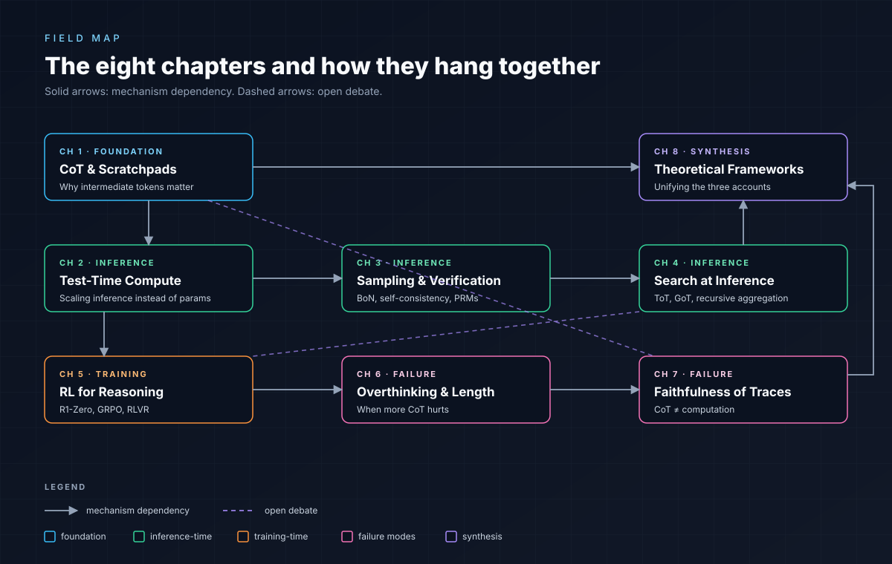

The reasoning-models field has at least five mechanistic accounts in active circulation. Most are partly true; none alone explains everything we see. This map is honest about that — it shows the schools, where the evidence supports them, and where the open debates live.
Solid edges = mechanism dependencies. Dashed = open debates. Color groups by role.

Each school explains a different fragment of what we observe. The labels are the curator's; they aren't standard, but they're the cleanest cuts. Most papers blend two or three.
A fixed-depth transformer is in TC0. T tokens of CoT amount to T extra serial steps — escaping toward problems that require P-class computation.
RL training compiles a search procedure into the policy distribution. Greedy decoding then mimics what an external search would do — without a search loop at runtime.
A CoT is the source of a small program the model "compiles" to its answer. Non-CoT inference interprets compiled artifacts of similar programs encountered at training.
CoT generation is implicit posterior inference over a latent "solution program." Extends the ICL-as-Bayes account to chains of intermediate states.
Reasoning circuits are already in the base from pretraining. RLVR is an elicitation procedure — it raises probability mass on paths that lead to verifiably correct answers.
The synthesis essay Why do reasoning models work? A synthesis argues these aren't competitors so much as views of different layers of the same elephant — and proposes which layer dominates for which task.
Each row is a real fault line — defenders on each side cite peer-reviewed evidence. The repo's job is to platform the disagreement, not to declare a winner.
If elicitation, RL re-shapes the base distribution. If learning, RL teaches the model new circuits.
If yes, CoT-monitoring is a viable safety primitive. If no, the safety story needs alternative tools.
The intuition: RL has already absorbed the easy search. Practice: it depends.
The Snell-style curves were measured at one scale. Whether the optimal allocation transfers is unsettled.
The deepest fault line. Determines whether the reasoning-model paradigm is qualitative or quantitative.
A condensed cross-tabulation. Read each row as: at fixed compute budget, this strategy is the right choice when the problem looks like the column.
| Strategy | Math (closed answer) | Code (unit-test) | Open-ended writing | Multi-hop QA | OOD (ARC-AGI) |
|---|---|---|---|---|---|
| Greedy long-CoT | ○ | ○ | ● | ○ | × |
| Self-consistency (cons@K) | ● | ● | × | ○ | × |
| Best-of-N + PRM | ● | ● | ○ | ● | ○ |
| Tree of Thoughts | ● | ○ | ○ | ● | ○ |
| Recursive self-aggregation | ● | ○ | ● | ● | ○ |
| RLVR-trained reasoner (single pass) | ● | ● | ○ | ○ | × |
| Test-time training | ○ | ○ | × | ○ | ● |
● well-suited ○ partial / verifier-dependent × known to underperform
Compute-extension: intermediate tokens give a fixed-depth transformer unbounded serial steps.
Snell, s1, R1, o1 — accuracy vs inference compute, regime-dependent.
Self-consistency, best-of-N, ORMs, PRMs. Verifier-side scaling is real.
ToT, GoT, AlphaProof, recursive aggregation. Where explicit search still dominates.
R1-Zero, GRPO, Tülu, RLVR. Elicitation, not learning.
Chen 2024, Hassid, Yang. Length should be conditional on difficulty.
Turpin, Lanham, Anthropic 2025. The chain is not the computation.
Compute-depth, program synthesis, Bayes-over-thoughts. Three accounts, no unification.
Calibrated for skim / weekend / research depth.